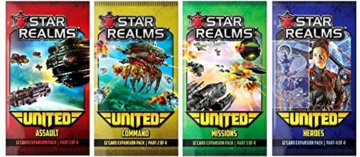

Buyer's Guide
Base Decks
As of now, the base game, Colony Wars, and Frontiers are the three full decks available for purchase. Out of all of the purchaseable star realms content, full decks are the most value moneywise. They can be all be played standalone 1v1. Each deck comes with different cards that are pretty well balanced. Each of the decks are balanced with each other too, despite having some new introduced card abilities.

Frontiers
Frontiers has less ally abilities overall, but introduces some cards with double ally abilities. More cards have scrap abilities. It also comes with enough starter cards for 2v2 and bosses that can be played against solo or co-op.

Colony Wars and the Classic Deck
You can never go wrong with the original. Buying the first deck is the cheapest option to play, and it will provide the same fun experiene as any of the other decks can. Colony wars introduces cheaper bases, adds a few cards that can be played immediately if the same faction is in play, and changes how each faction can be played.

Booster Packs
Booster packs can be purchased to slightly modify or add complexity to the full decks. Some booster packs will just come with set normal cards, but others will include different types of cards, mentioned below.
Heroes
Heroes add some complexity to the game. When purchased, they will give you a small bonus and possibly grant an ally ability. Most of them can be scrapped to be used again. They're very useful for players who struggle to stick with one or two factions.
Gambits
Gambits add small buffs that can be used to speed up the game. When flipped over, they might increase your combat, trade, or even modify the game in some way to your benefit. There isn't one correct way to implement them into your games. They can be given to a player who is new to the game and might need some extra help. Both players can start with the same gambits and whoever uses them better might end up being the winner.
Multi-Faction Cards
There are a few booster packs that come with multifaction cards. These play like normal cards, but they can activate ally abilities of either faction. Sometimes these cards will have an ally ability that can be activated by either faction, or two ally abilities for each faction this card represents.
Legendary Commanders
There are six different legendary commander starter decks that can make for a fun challenge. A player can play a command deck against two other players or go 1v1 against another legendary commander. These come with a strong multifaction card, gambits, and a twelve card starter deck that already works well with two different faction.
Tech
Tech provides a use for money later game. Players can purchase tech and spend coins to gain an ability once per turn. It adds a fun layer of complexity to the game and provides another strategy that could make you the winner.
Game Changing Cards
Senarios and events add a bit of randomness to the game and are a good way to mix it up. One scenarios can completely change how the game is played. An event could change the course of a game. Missions provide an alternative to way to win. Missions give small tasks to complete, and when completed will give you a reward.
